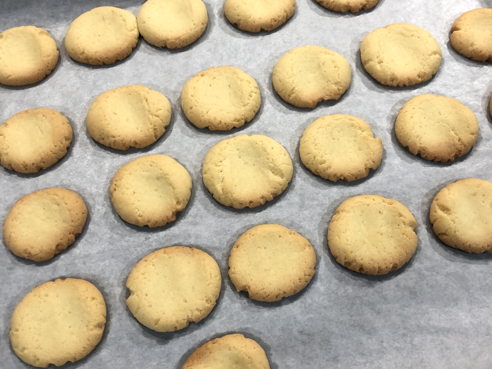

YUHUA'S THREE RECIPES
- Spaghetti With Green Onion Beef

Ingredients
- Green Onion
- Garlic
- Beef Slices
- Spaghetti
- Salt
- Soy Sauce
- Oyster Sauce
Instructions
1. Dice the shallots and garlic.
2. Cook the spaghetti in a pan.
3. Pour the olive oil into another pan and add the chopped shallots and garlic.
4. Saute beef slices until shallots and garlic are fragrant.
5. When the beef is well-done cooked, add the cooked spaghetti.
6. Add the salt, soy sauce and oyster sauce and stir well.- Chilli-Honey Chicken Wings

Ingredients
- Chicken Wings
- Garlic
- Chilli
- Ginger
- Honey
- Salt
- Soy Sauce
Instructions
1. Wash the chicken wings.
2. With a knife in the wings on both sides of the two separate crossings.
3. Add ginger, garlic, salt, pepper, honey, soy sauce and other seasonings into the chicken wings.
4. Mix seasoning and chicken wings by hand and marinate for 4 hours.
5. Put the wings in a baking pan and bake them in the oven at 180 degrees Celsius for 30 minutes.- Basic Butter Cookies

Ingredients
- Butter
- Egg
- Sugar
- Low-gluten flour
- Salt
Instructions
1. Soften 70g butter at room temperature, add 70g sugar and 4g salt, mix well and whisk with eggbeater until white.
2. Add the eggs and whisk well.
3. Sift and add in 220g of low-gluten flour and knead into dough.
4. Line a baking sheet with oiled paper and knead the dough into small pieces. Flatten the pieces on the baking sheet.
5. Bake at 160 degrees Celsius for 20 minutes.